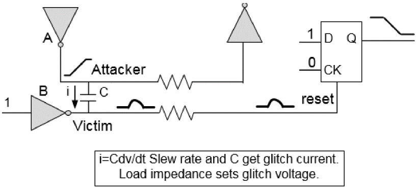
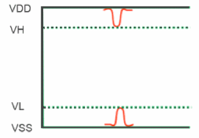

SI Glitch Analysis - An Overview
Glitch analysis is based on calculating the worst-case glitch waveforms on each net in the design. SI can result in functional failures due to glitch. This is illustrated in the diagram below:
Figure -43 Glitch due to SI resulting in functional failure

In this example, coupling from attacker A causes a significant glitch on the reset signal so that it resets the flip-flop and destroys the stored logic state. This problem does not show up in logic simulation, formal verification, or timing analysis. Isolating the source of a noise-induced functional problem can be very time consuming and may take a few months of debugging. Tempus calculates and reports the glitch induced in the design due to these scenarios.
Tempus performs glitch analysis by analyzing each potential victim net from primary inputs to primary outputs. The analysis of each net is based on calculating the worst-case glitch waveforms that can occur at the input pins of each of the victim net's receiving cells. The receiver output peak of each receiving cell instance is computed by analyzing the propagation of the glitch waveform from the receiver's input through the first stage in the receiver. Tempus assumes all worst-case crosstalk scenarios are possible unless timing windows are used.
Tempus checks for glitch receiver peak and propagates the glitch at a single stage and checks to see if the noise glitch exceeds the failure criteria. This greatly reduces the number of potential false alarms as it utilizes the inherent glitch filtering properties of CMOS logic.
Glitch Type
There are two types of glitch depending on victim state and attacker switching direction.
| Glitch Type | Victim State | Attacker Switching |
These are illustrated in the figure below.
Figure -44 VL and VH Glitch type

Glitch between ground and power rail voltages can cause logic failure, if they exceed logic thresholds of the technology.
Return to top